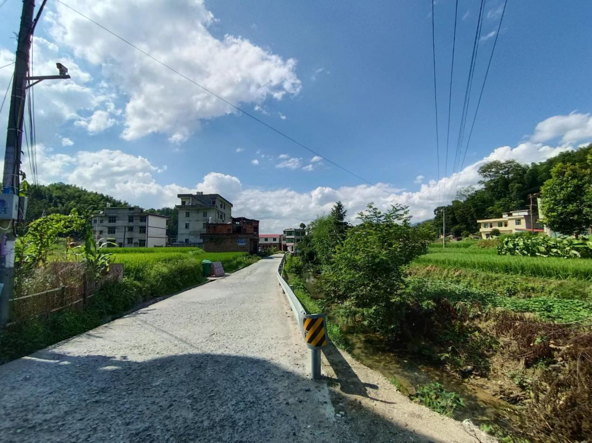
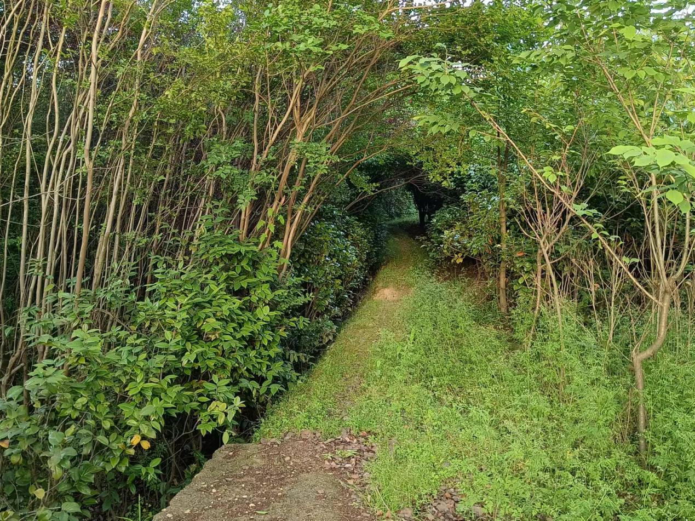
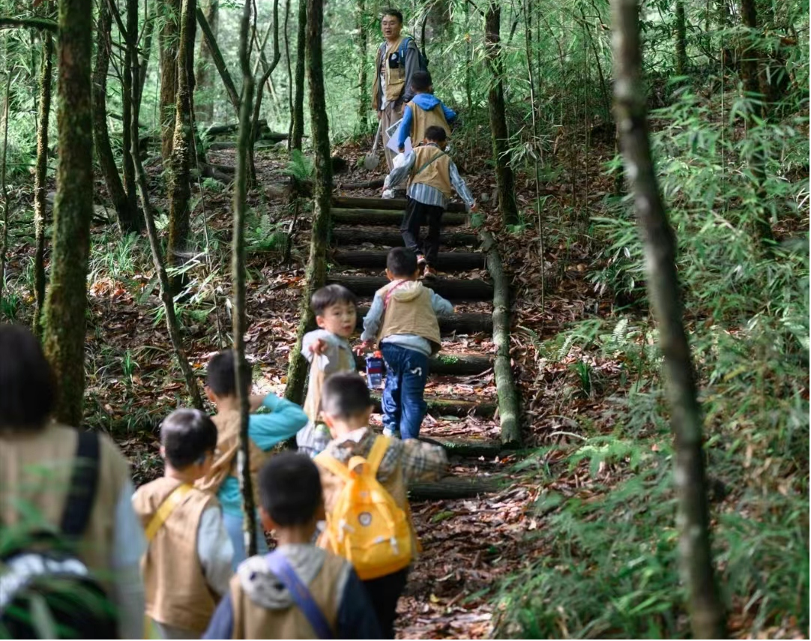
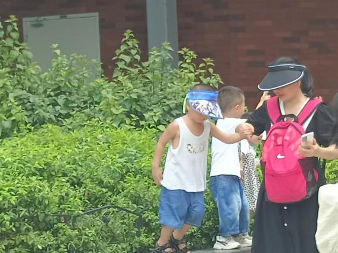
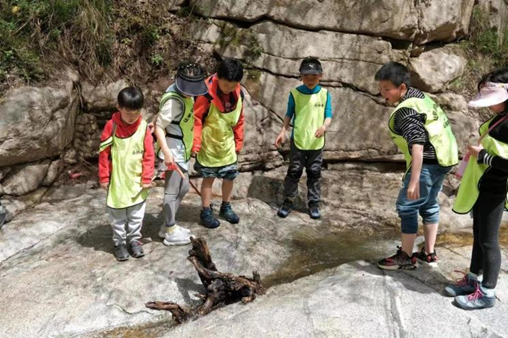
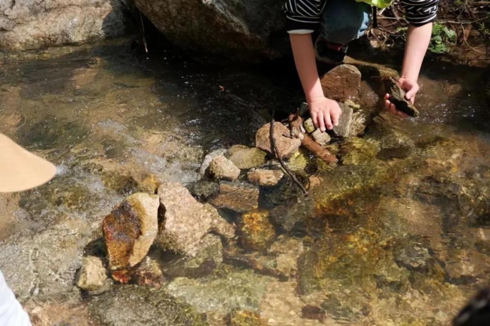
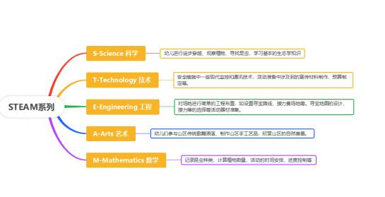

西寺沟“绿野寻踪”








产品概述
幼儿的 STEAM 教育是各个学科之间的融合，实现核心素养导向的深度学习，其中包括了通过以自然生态环境为代表的非正式教育场所开展情境式、体验式教育。
本项目将利用一天时间，在西安市西寺沟展开“西寺沟绿野寻踪”的沉浸式研学活动。在这趟研学中，孩子们将穿梭于茂密的林间，聆听鸟儿的歌唱，感受大地的脉搏。他们将在乡野探索导师的指导下，亲手触摸树木的纹理，观察植物的生长，探索动物的足迹，深入了解自然界的奥秘。
同时，孩子们还将参与到各种跨学科实践中，通过采集植物标本、搭建简易帐篷、创作自然艺术品等活动，将科学、技术、工程、艺术和数学的知识融入其中，感受知识的魅力与力量。
西安西寺沟地处山区，拥有得天独厚的自然资源，如山地、森林、溪流等。为了充分利用这些资源，我们特别策划了此次以山区自然资源为依托的幼儿乡村体育类研学活动，让幼儿们亲近自然，感受山区的独特魅力，参与具有山区特色的体育活动，增强幼儿的身体素质，培养幼儿的团队协作精神、环保意识以及对自然的敬畏之心。
研学地介绍
西安西寺沟位于秦岭北麓太平峪深处，107 省道绕山而过。这里交通便利，地理位置优越。西安西寺沟沟道全长 25 公里，两边奇峰峻峭，水清树茂，自然景观众多。
西安西寺沟入内两山对持，一水中流，林野翠绿。山雀鸣叫，野花烂漫，青藤蔓草缠树，溪河清粼响石。入狭长幽折山谷，溪流穿流，野径迷乱。山幽林密，凉气怡人。
活动亮点
自然探索
徒步穿越、观察植物、寻找昆虫，培养观察力与探索精神。
山区体育
“森林寻宝”“溪流接力”等特色体育活动，增强体质与团队协作。
环保行动
垃圾捡拾、植树等环保活动，培养环保意识与对自然的敬畏。
山区文化
观看山区传统歌舞、学唱山歌、制作手工艺品，感受山区文化魅力。
行程及活动安排
| 日期 | 地点 | 时间 | 行程安排 | 学习内容 |
|---|---|---|---|---|
| 第一天上午 | 出发 | 08:30-09:00 | 集合出发，前往西寺沟 | 让幼儿们亲近自然，感受山区的独特魅力 |
| 西寺沟 | 09:00-09:30 | 抵达西寺沟，介绍活动场地、安全注意事项及山区自然资源特色 | 了解山区自然资源与安全须知 | |
| 西寺沟 | 09:30-10:30 | 山区自然探索：徒步穿越、观察植物、寻找昆虫 | 培养观察力和探索精神；途中设置寻找特定植物、记录昆虫种类等小任务 | |
| 西寺沟 | 10:30-11:00 | 休息与交流 | 分享自然探索的发现和感受 | |
| 西寺沟 | 10:30-11:00 | 休息与交流 | 分享自然探索的发现和感受 | |
| 西寺沟 | 11:00-11:30 | 山区特色体育活动：“森林寻宝”“溪流接力” | 利用山区自然资源，在游戏中锻炼身体、提高团队协作能力 | |
| 中午 | 西寺沟 | 11:30-13:00 | 午餐时间 | 利用山区自然食材制作简餐，体验野餐乐趣 |
| 下午 | 西寺沟 | 13:00-14:00 | 环保主题活动：垃圾捡拾、植树 | 培养环保意识；邀请环保专家现场讲解山区生态环境的重要性与保护方法 |
| 西寺沟 | 14:00-14:30 | 休息与交流 | 分享环保活动的感受和体验 | |
| 西寺沟 | 14:30-15:30 | 山区文化体验：传统歌舞表演、山区故事讲述、学唱山歌、制作手工艺品 | 感受山区文化的魅力，深入体验山区文化 | |
| 西寺沟 | 15:30-16:00 | 活动总结与分享 | 分享收获和感受，颁发参与证书和纪念品 | |
| 傍晚 | 返回 | 16:00-16:30 | 集合返程 | 结束愉快的研学之旅 |